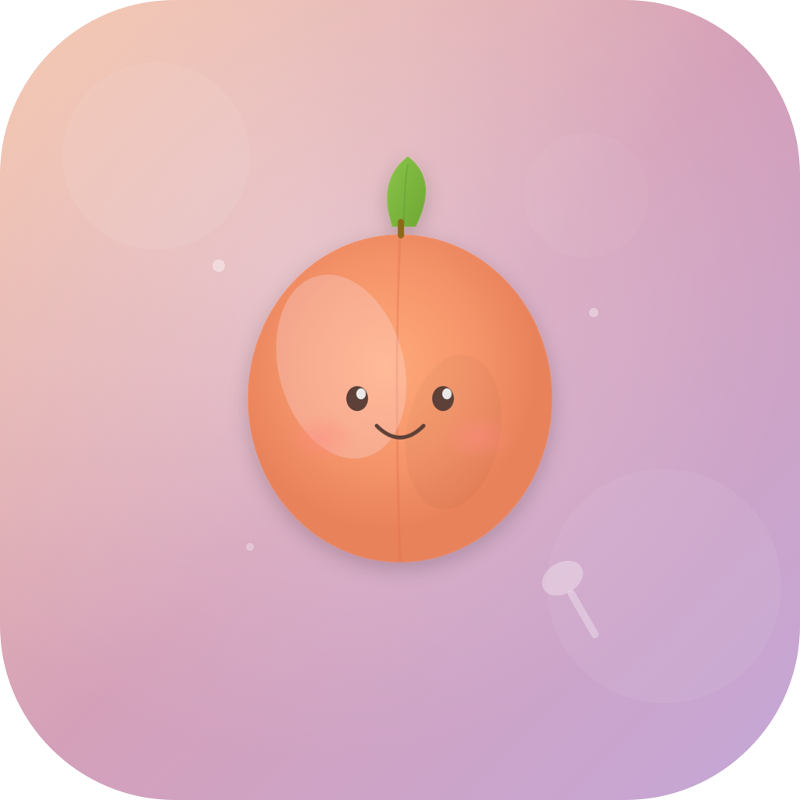
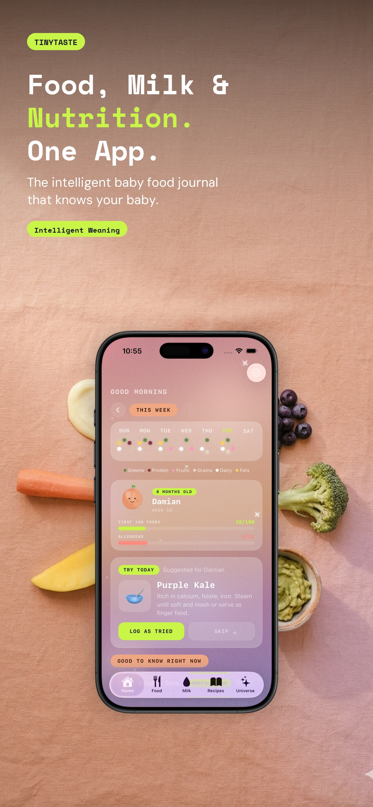
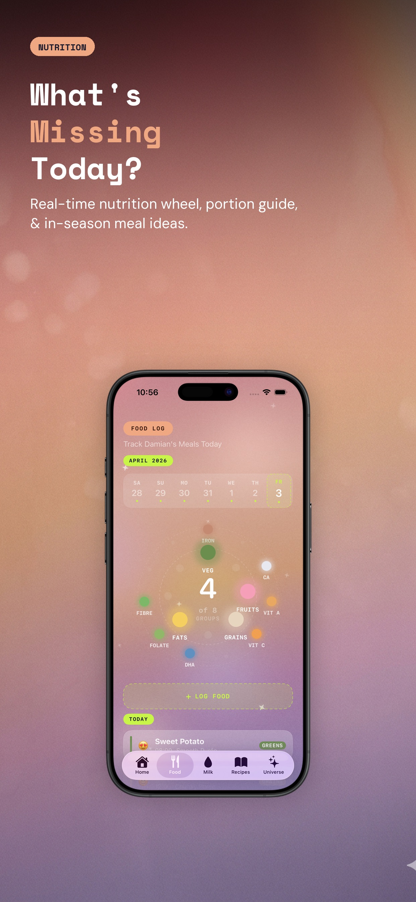
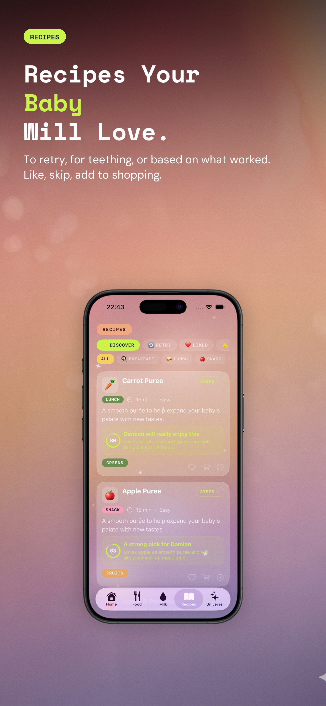
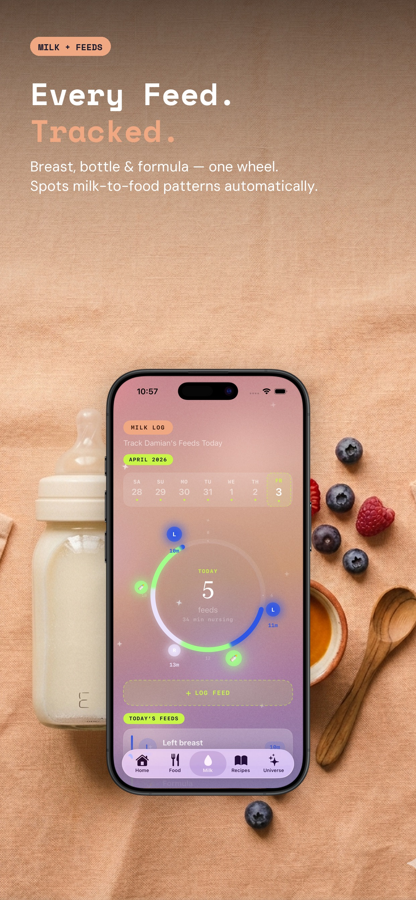

Log a little taste.
Add the food, texture, amount and reaction. Keep milk feeds alongside first foods.

TinyTaste.Get TinyTasteA little help at the high chair
First foods. Little favourites. The next meal.
Keep track of it all, with ideas shaped by your baby.
For iPhone & iPad · iOS 17+ · Optional Premium
Remember the last taste.
Make room for the next one.

From “did they like that?” to “what’s next?”
You already have enough to remember. TinyTaste keeps the feeding details together so you can get back to the messy, lovely bit.
Add the food, texture, amount and reaction. Keep milk feeds alongside first foods.
Remember favourites, foods explored and reactions. See variety in the meals you’ve logged.
Try Today suggests a food to explore. Premium adds more personalised recipes and guidance.
A closer look
A food diary becomes more useful when you can do something with it.
The wheel reflects logged foods and estimated portions. It cannot diagnose a nutritional deficiency or confirm everything a baby needs.
First-food progress & Try Today · Free

Nutrition wheel & food logging · Free

Full personalised recipe collection · Premium

Milk logging & feed history · Free
Thoughtful by design
Ask feeding questions using the app’s referenced nutrition library and your logged history. Tiny can say when it doesn’t have an answer.
Track foods and reactions to remember what happened. For concerns about allergies, growth or nutrition, speak with a healthcare professional.
Food and milk logs are saved on your device. Signed-in profile basics sync; intelligent features process relevant data remotely. Read how data is used.
Start with the useful stuff
Build your food diary at your own pace. Add Premium when you want more personalised inspiration.
The everyday essentials
A place for the details you want to remember.
You can continue in the app without creating a sign-in.
For a little more inspiration
Go further with ideas shaped by your baby.
See local monthly or annual pricing and any eligible trial before subscribing. Subscriptions renew automatically unless cancelled.
A useful place to start
The little questions
Keep a record of foods, textures, amounts, reactions and milk feeds. Follow first-food progress, see a nutrition wheel based on logged meals, and get suggestions shaped by your baby’s stage and food history. Premium adds more personalised recipes, insights and guidance.
Yes. Food and milk logging, the nutrition wheel, allergen record, journal and Try Today suggestions are included in Free. Premium is optional. The app shows current local prices and any eligible trial before purchase.
No. Log the textures and foods that fit your own feeding journey, whether you offer purées, finger foods or a combination. TinyTaste is a record and inspiration tool; follow your healthcare professional’s advice on readiness and suitable food preparation.
It summarises the foods and estimated portions you record. An incomplete wheel can reflect an incomplete log. It is not a clinical assessment, diagnosis or requirement to complete every ring each day.
You can continue without creating a sign-in. If you sign in, basic baby profile information syncs to help restore your profile. Food and milk history is stored on your device. Some intelligent features send relevant information for remote processing. See the privacy policy.
TinyTaste is currently available for iPhone and iPad running iOS or iPadOS 17 or later. There is no Android version at the moment.
Visit TinyTaste support or email tinysupport@cogdev.ai. For medical questions, contact your healthcare professional.
One little taste at a time
First foods, favourites and the next meal. Together.